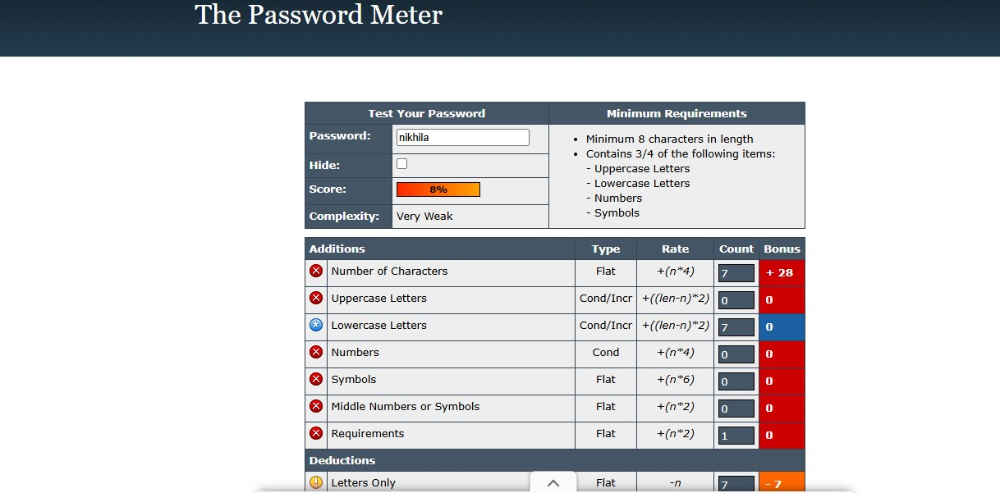
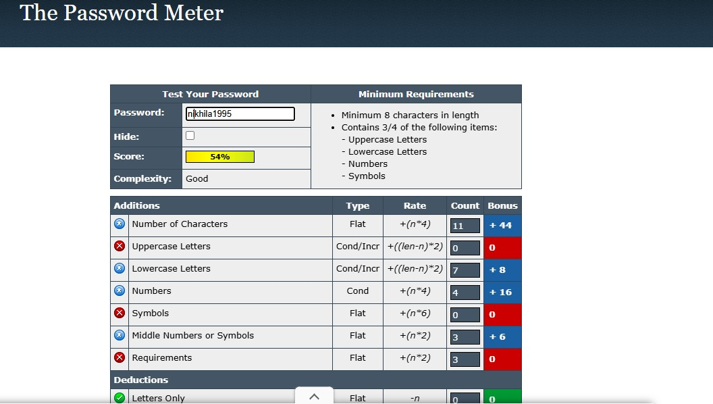
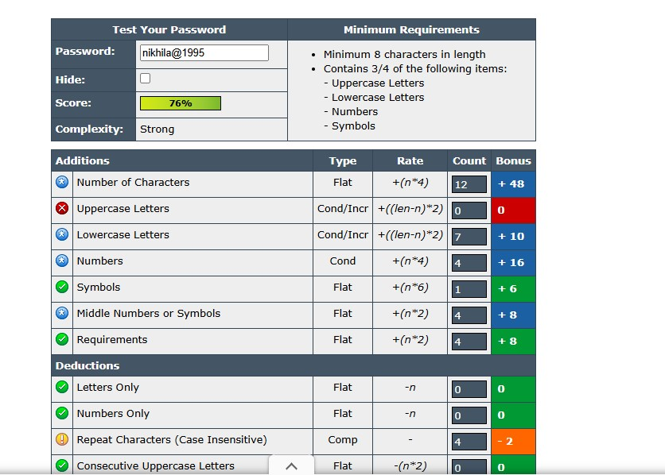
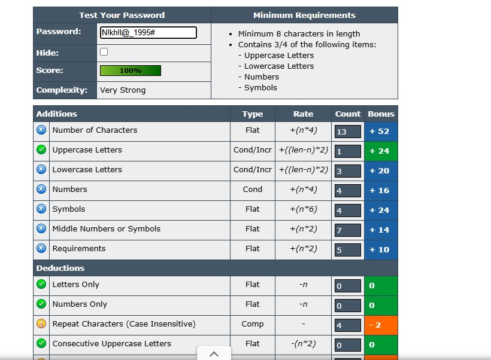

Create a Strong Password and Evaluate Its Strength
Objective: Understand what makes a password strong and test it against password strength tools.
Tools: Online free password strength checkers (e.g., passwordmeter.com).
Step 1. Create multiple passwords with varying complexity.
Use uppercase, lowercase, numbers, symbols, and length variations.
| Password |
Strength |
Example |
| Letters |
Simple |
nikhila |
| Letters,Numbers |
Medium |
Nikhila1995 |
| Letters,Numbers,Symbols |
Strong |
Nikhila@1995 |
| Length variations |
Excellent |
N!kh!l@_1995# |
Step 3.Test each password on password strength checker.
Password 1- nikhila : The comlexity of the passwod - Very weak. score-8%. rating - Failure:Does not meet the minimum standards.

Password 2- nikhila1995 : The comlexity of the passwod - Good. score-54%. rating -Advisory against employing bad practices

Password 2- nikhila@1995 : The comlexity of the passwod - Strong. score-76%. rating -Sufficient:Meets minimum standards.

Password 2- N!kh!l@_1995# : The comlexity of the passwod - Very Strong. score-100%. rating - Exceptional: Exceeds minimum standards.

Step 5. Identify best practices for creating strong passwords.
- Make it long: Aim for at least 12 characters, but 14 or more is even better.
- Be complex: Include a mix of uppercase and lowercase letters, numbers, and symbols
- Avoid personal information: Do not use your name, birthday, address, or pet's name.
- Don't reuse passwords: Use a different password for each account. If one account is compromised, others will remain secure.
Step 6. Research common password attacks
- Phishing :
Tthe most common type of password attack, phishing involves a hacker pretending to be a trusted party and reaching out to their target requesting that they share personal login information. This often takes the form of a password-reset request or an account-confirmation email and can go as far as installing malicious code on the target’s machine when the provided link is accessed.
- Man-in-the-Middle Attack :
In a man-in-the-middle (MitM) attack, a hacker positions themself between a user and the system they are accessing. This form of wiretapping often capitalizes on unsecured Wi-Fi connections or unencrypted communications and allows the attacker to intercept or modify the data being communicated with the application.
- Brute Force Attack :
Not every type of password attack involves subterfuge. A brute force attempts to gain access to restricted accounts and networks through trial and error, trying a large number of username and password variations.
- Keylogging :
Keylogging is made possible by malware infection. A keylogger program is downloaded onto the target’s device (generally by masquerading as a legitimate download), where it can then record and share the user’s keystrokes — including their usernames and passwords — with the attacker.
- Dictionary attack : A more targeted brute-force attack that uses a precompiled list of common words, phrases, and leaked passwords. These are very effective against users who choose simple, easy-to-guess passwords like "password123".
Summary
Strong password creation relies on length, variety, and randomness. Simple passwords are easily broken using dictionary or brute-force attacks, while complex, long, and random passwords can take centuries to crack. The best defense is to use a password manager and multi-factor authentication (MFA).